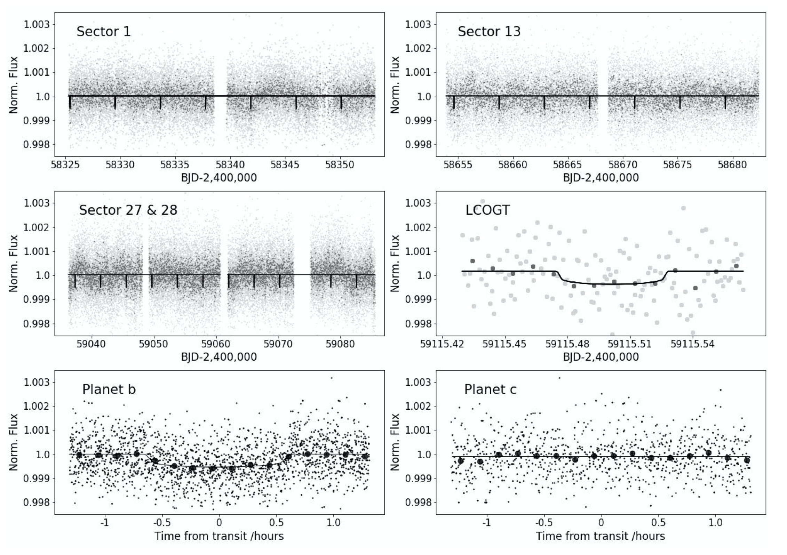
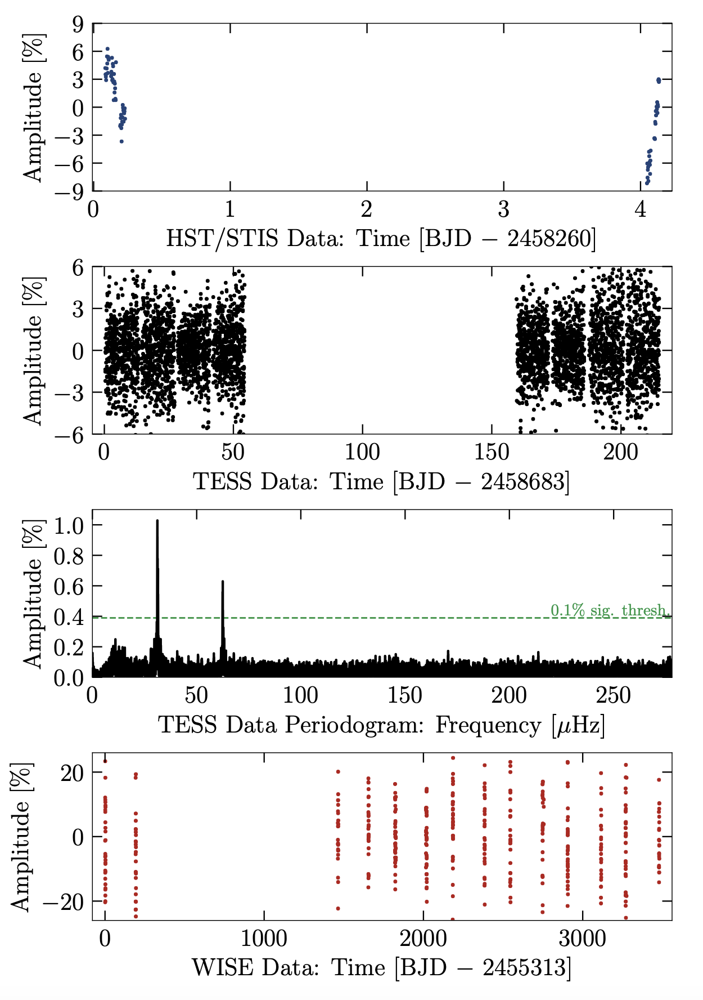

STATUS UPDATE: Orbit 2 of Sector 37 is now available to download as a TICA product from MAST
Welcome TESS followers this weeks news bulletin in which we look at three papers from the archive,
TESS and HARPS reveal two sub-Neptunes around TOI 1062 (Otegi et al., 2021) :
In this paper the authors report on the discovery of two sub-Neptunes orbiting around a G9V type star which has a V-band magnitude of 10.25. This star is known as TOI 1062 (TIC 299799658) and was observed by TESS in Sectors 1, 13, 27, and 28.
Precise radial velocity measurements with HARPS reveal that TOI 1062b has a radius of 2.265 Re, a mass of 11.8 Me, and an orbital period of 4.115050 days. TOI 1062c is not transiting, but a minimum mass of 7.4 Me was determined, in addition to the fact that it is near the 2:1 mean motion resonance with TOI 1062b, with an orbital period of 8.13 days.
The transiting planet, TOI 1062b, has a mean density of 5.58 g cm-3 and its internal structure is thought to have a small volatile envelope accounting for 0.35% of the mass at maximum.
8.9-hr Rotation in the Partly Burnt Runaway Stellar Remnant LP 40-365 (GD 492) (Hermes et al., 2021) :
There exits a class of partly burnt runaway stars, which have been ejected from their binary systems upon a thermonuclear supernova event, LP 40-365 is the prototype of this class. This object is thought to be cause by a subluminous Type Iax supernova that failed to destroy the host star.
In this paper the authors report on an 8.914-hr variability that is evident in both the optical and ultraviolet light curves. The 1% optical variation was first discovered in TESS data, and the 5.8% variation in the UV was detected by the HST. The authors propose that this variation indicates the surface rotation rate and is caused by some sort of inhomogeneity rotating in and out of view, there is no observed Zeeman splitting however and therefore the magnetic field has an upper limit of <20 kG.
The paper goes on to explore how the rotation rate observed could be used to constrain progenitor scenarios, if the angular momentum were mostly conserved. The authors suggest that LP 40-365 was not the donor star of its binary system, but likely the white dwarf that underwent advanced burning from an underluminous (Type Iax) supernova. See this paper for more detail.
Eclipsing Systems with Pulsating Components (Types β Cep, δ Sct, γ Dor or Red Giant) in the Era of High-Accuracy Space Data (Lampens et al., 2021) :
Eclipsing systems, especially those with a pulsating component, are vital for the understand the properties of stars and stellar systems, and crucial for precise asteroseismology. With the advent of missions like Kepler and TESS, the detection and characterization of such systems has significantly increased. In this paper the authors present recent results from studies of eclipsing systems with pulsating components based on data from Kepler or TESS.
Systems examined in this paper include: semi-detached eclipsing binaries in (near-)circular orbits; a (near-)circular and non-synchronized eclipsing binary with a chemically peculiar component; eclipsing binaries showing the heartbeat phenomenon; and detached, eccentric double-lined systems. All display one or more pulsating component(s). Please read this paper for more details on the systems presented.

Fig. 1: Taken from Otegi et al., 2021: TESS photometry of TOI 1062 from Sectors 1 (upper left), 13 (upper right), and Sectors 27 & 28 (middle left), and LCOGT photometry (middle right). The TESS light-curves correspond to the PDC-SAP flux time series provided by SPOC. The TESS full light curve with the 2-minute cadence data is shown in light-grey, and the same data binned to 10 min in dark-grey. The gaps in the data coverage are due to observation interruptions of the TESS spacecraft to send the data to Earth, that occurs after each TESS orbit of 13.7 days. The dots of the LCOGT are bigger for better visualization. The lower panels shows the phase folded TESS light curves for TOI 1062b (left) and TOI 1062c (right) with the 2 min cadence data in light-grey and binned to 10 minutes in black. TOI 1062c does not transit.

Fig. 2: Taken from Hermes et al., 2021: Full light curves of LP 40−365 used in the papers analysis. Top Panel: Five orbits of HST/STIS ultraviolet observations from 2018 May. Second Panel: Four sectors of TESS full-frame images from 2019 July to 2020 February. Third Panel: Periodogram of TESS observations revealing a dominant period at 8.914 hr and its second harmonic. Bottom Panel: More than 9.5 yr of WISE infrared photometry from 2010 April to 2019 November.